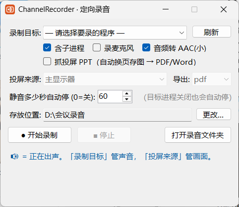

只录你指定的那个程序的声音,同时把画面按翻页自动存图 —— 有音有画。开完会人不在也没关系,它会自己停、自己压缩、自己导出 PDF。

整个程序就这一个窗口 —— 选目标、勾选项、点开始,没有别的了。
指定哪个程序,就只录它的声音。你的微信提示音、音乐、键盘声都不会混进去 —— 不是"录整个电脑"。
自动识别投屏翻页,每一页存成图片,收工时合成一个 PDF / Word。听回放时对得上当时在讲哪一页。
会议软件关掉、或安静超过设定时间,它自己停、自己把音频压成小文件。你可以放着去干别的。
勾一下就把麦克风混进同一个文件 —— 对方说的和你说的,都在一条音轨里。
自动转成 AAC,约 0.7MB/分钟。两小时的会大概 80MB,微信能发、网盘能传。
整块屏幕、某个窗口(会跟着窗口走)、或者鼠标拖一个框 —— 只要 PPT 那一块也行。
它录的是声音播放到系统之后的那一路 —— 也就是你耳朵听到的那份, 而不是去调用某个软件自带的录制功能。画面走的是 Windows 现代捕获接口, 硬件加速的内容也不会花屏,窗口被挡住也照抓。
录别人讲话可能涉及隐私,某些场合还涉及"是否经过同意"的法律问题。 请你确认自己有权录制、并且只用于自己回看整理。这个工具不替你做这个判断, 由此产生的责任由使用者承担。
不用。下载下来就是一个 exe,双击直接开。.NET 运行环境已经打包在里面了 —— 这也是文件有 176MB 的原因。 不需要管理员权限,不写注册表、不装驱动。不想要了,直接把这个 exe 删掉就干净了。
目前只能 Windows,而且需要 Windows 10 版本 2004(build 19041)或更新,Windows 11 直接可用。 因为它依赖的是 Windows 才有的「进程级音频捕获」接口 —— 正是这个接口让它能只录某一个程序,而不是整台电脑的声音。 macOS 系统层面没有等价的开放接口,所以暂时做不了。
界面上有一行 「存放位置」,随时显示完整路径,不用猜。旁边「更改…」可以改到任意文件夹, 改完会记住,下次打开还是它;右下角「打开录音文件夹」一键跳过去。 默认位置是 我的文档 \ ChannelRecorder。
八成是「录制目标」选错了程序。注意界面上有两个下拉,管的是两件事: 上面的「录制目标」决定录谁的声音,下面的「投屏来源」只决定抓谁的画面。 要录会议,「录制目标」也得选成会议软件(只在「投屏来源」里选它是不够的)。 另外录制过程中界面有实时音量条,一直是空的就说明选错了 —— 当场就能发现,不用等录完才知道。
不会。它抓的是那个程序自己产生的音频流,不绑定具体的输出设备, 中途换耳机、换声卡、改系统默认输出都不影响录制。
它抓的就是画面在你屏幕上的实际像素,屏幕上显示得小,存下来就小。 所以把会议窗口最大化再录最清楚。录制中界面会显示当前「抓取 1920x1080」这样的分辨率, 数字太小就说明窗口太小或者选错了窗口,可以当场重来。
完全免费,MIT 开源。全程只在你自己电脑上跑,不联网、不上传任何音频或画面。 源码全部公开在 GitHub,可以自己查、自己编译一份来用。